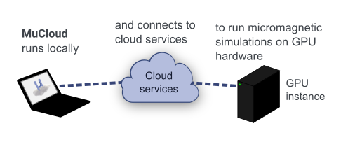
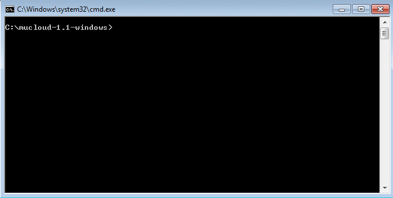

MuCloud¶
Note
Many changes have occurred since this tool was developed, in both AWS and Python. This project is not being actively maintained and will be archived for further reference. We hope that it still provides a useful example for how to run simulations on cloud resources.
MuCloud runs MuMax3 GPU-accelerated micromagnetic simulations on the cloud, eliminating the need to have a GPU card on your computer.
With your Amazon Web Services (AWS) account, virtual computer instances are created using the Elastic Compute Cloud (EC2). These instances provide on-demand (price per hour) access to physical GPU hardware, that allow the simulations to be run remotely. The script interface mimics MuMax3, so that working with MuCloud is as easy as using MuMax3 on a local computer.
Citing¶
If you make significant use of this program, we kindly ask that you cite:
GPU-accelerated micromagnetic simulations using cloud computing, J. Magn. Magn. Mater. 401, 320-322 (2016) DOI:10.1016/j.jmmm.2015.10.054
The code is written and maintained by Colin Jermain and Graham Rowlands from Cornell University in the Ralph and Buhrman research groups. MuCloud is open-source software, released under the MIT License.
Usage¶
A full tutorial is provided to get you started that covers all the functionality of the program. Below is an example of running Standard Problem 4 with MuCloud on a Windows machine.
